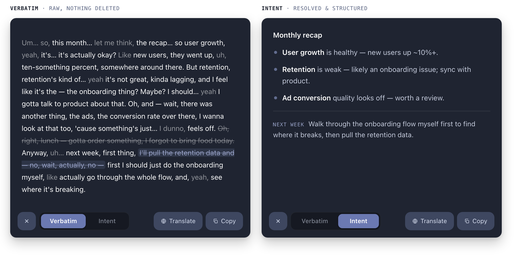

One bar. The whole loop.
Desktop AI work is a loop — bring context in, produce your output, refine it. Today it's scattered across apps, the clipboard, a translator, a chat box, and every hop drops context on the floor. This IME keeps the whole loop on one always-present bar, right where your cursor already is.
Working prototype · modes & cleanup
Input quality is no longer about typing speed
As AI becomes a daily collaborator, what matters is how fast and how faithfully you can hand it a complex intent.
On desktop, the core workflows are still office productivity and development. The design question is not just how to capture speech, but how to let people hand off a complex intent quickly enough to keep their work moving — especially in long-form writing and Vibe Coding.
Raw transcription isn't usable text
Speech-to-text captures words literally. But real speech never arrives clean — and cleaning it up is work.
Raw voice transcription captures words literally, but real speech includes:
- Self-corrections — “month over month, sorry, year over year.”
- Fillers and false starts — “um,” “like,” “let me think.”
- Topic drift — a lunch tangent in the middle of a business recap.
This creates heavy cleanup work before the text becomes usable.
Quotes, numbers, commitments — you need it word-for-word.
Drafting, summarizing, prompt writing — you need clear intent, not the mess.
Make voice useful without taking people out of their work
The opportunity was not another destination AI app. It was a system layer that could help in the moment, without making speech feel less trustworthy.
Voice input has to remain close to the caret and the active task — not pull people into a separate AI workspace.
Quotes, numbers, and commitments matter. Any cleaner interpretation must keep the original words available.
One bar cannot become another complex command surface; it needs to surface the next useful action from context.
The model must stretch from long-form writing to cross-language work and prompt editing — not solve a single demo case.
One bar that turns context into the next action
Rather than another destination AI app, Voice IME stays close to the caret: one entry point, context-aware actions, and explicit control over transformation.
The system is built around three principles:
- One entry point — every voice task starts from the same lightweight bar, rather than a scattered set of tools.
- Context-aware actions — the selection, caret, clipboard, and active app determine what the bar can do next.
- Control before automation — users can choose the right reading of speech and verify what changes before accepting it.
Preserves wording fidelity for precision-sensitive tasks — quotes, numbers, commitments.
Resolves spoken repairs, drops low-value noise, and outputs a cleaner structure for drafting.

Verbatim shows everything actually said — raw. The styling never rewrites; it only marks what each span becomes in Intent. Three semantic tiers, three visual treatments — never one blanket strikethrough.
.fill.drop.fixOne handle. The context picks the verb.
Where your cursor or selection sits is the universal handle. The whole loop — bring context in, produce, refine — lands on the same bar, and context decides which verb it offers. Five features stop being a menu and fall into place.
See it in the work people already do
Each scenario follows the same arc: current context, a spoken request, an interpreted action, and a result the user can still check.
What Intent Mode actually does
Click a capability to see its raw → output transformation. Same spoken input on top, resolved output below.
We should review onboarding and investigate the drop in ad conversion quality.
Getting to first success
A new user reaches their first win by solving exactly three things — nothing more in the way.
Demo · first-run onboarding
From character entry to intent transfer
Reframing voice from character entry to intent transfer means faster capture, lower post-edit cost, and higher trust in the generated text — because you can always see and recover what was actually said.
Driven from insight to execution: problem framing, interaction model, capability logic, and an implementation-aligned demo. Not only a UI concept — shipped as a working, demonstrable behavior layer.